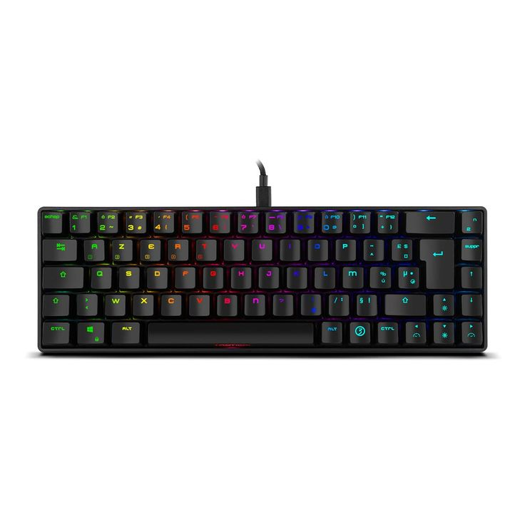

Productos Destacados

Teclado Mecánico RGB
Disfruta de una experiencia de escritura superior con nuestro teclado mecánico de última generación.
Precio: $1,200 MXN

Mouse Gamer 16000 DPI
Precisión y velocidad en tus manos con nuestro mouse gamer de alta sensibilidad.
Precio: $800 MXN

Auriculares Gaming 7.1
Sumérgete en el juego con nuestros auriculares de sonido envolvente y micrófono integrado.
Precio: $1,500 MXN